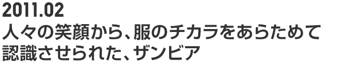
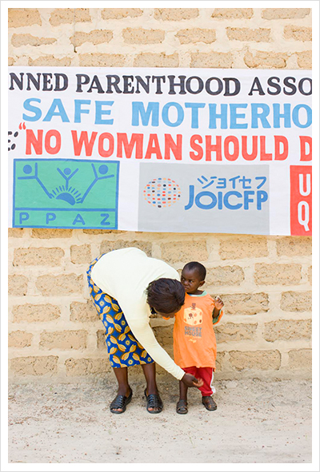
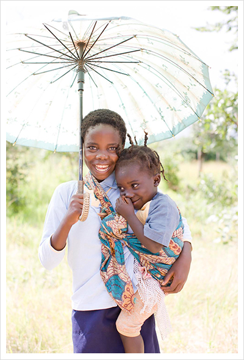
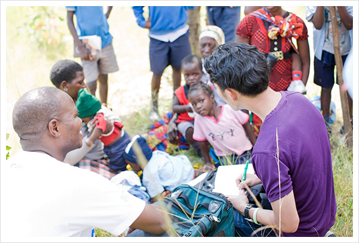
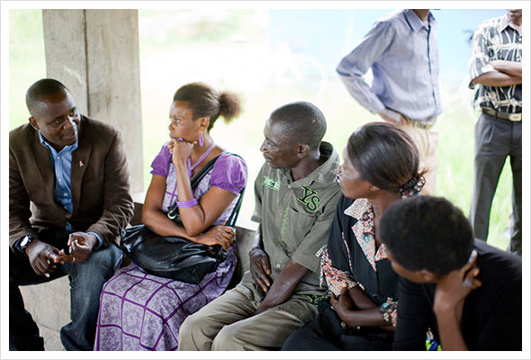
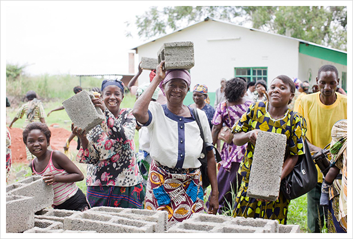
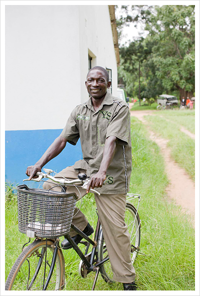
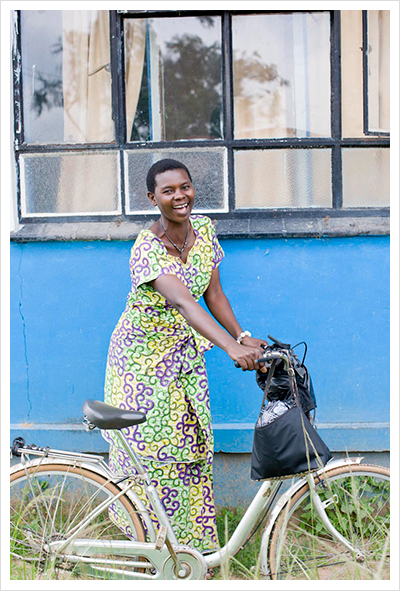
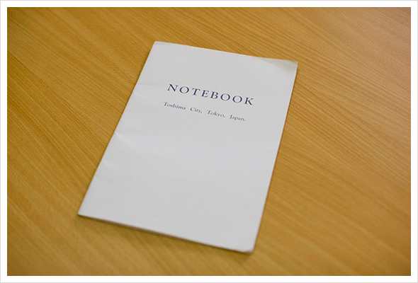
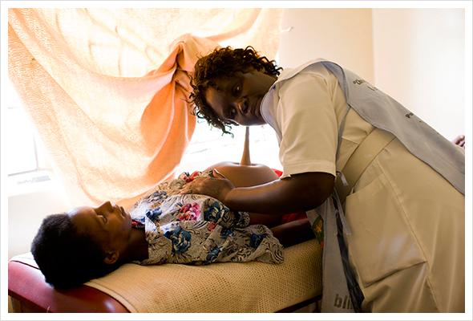

- 
- 31.
- 子どもの服を正すお母さん。お母さんの振る舞いはどこの国も同じ。
- 
- 32.
- 姉妹で新しい服をきてポーズ。兄弟を抱っこするお兄ちゃん、お姉ちゃんをよくみかけた。
- 
- 33.
- 今後の支援に活かすために、衣服に対する思いやニーズも調査する。
- 
- 34.
- 翌日、再びフィアレ診療所を訪れる。テーラー業を営む女性たちを対象に 昨日の配布に対する反応の確認や、バングラデシュで始めたビジネスの商品に対するヒアリングを行う。実際にソーシャルビジネスで販売している商品を見せると、私ならもっと上手に縫えるわよと自信満々の様子。夫が農業をする傍ら、彼女たちはテーラー業を営み家計を支えているという。とても逞しい女性たちだった。
- 
- 35.
- 外では待機ハウス建設を手伝う保健推進員。こちらの人は本当に頭の上にモノをのせて運ぶのがうまい！
- 
- 36.
- 日本の放置自転車がザンビアに多く贈られていた。その一台にのり、ポーズをとってくれた保健推進員。自転車で村をまわって、啓蒙活動を行う。男の人が強いザンビアでは、男の保健推進員が対等の立場で旦那さんを説得することで初めて奥さんが診療を受けることができる。
- 
- 37.
- 逆に女性の推進員は、奥さんが恥ずかしがって疑問や不安があっても口にしたがらない出産の悩みを聞き出すのが役目。
- 
- 38.
- ちなみに、こちらは豊島区が寄贈しているノートブック。日本から贈られる放置自転車のコンテナの隙間に入るもの、ということでノートを制作して贈っているらしい。ステキな隙間の活用術、と感心。
- 
- 39.
- ザンビアで支援について学んだこと。善意のはずの援助が汚職の原因になってしまったり、援助してもらうことが普通になってしまったり。そんな現状がアフリカにはある。悪い意味でのいわゆる援助漬け。そこで今、求められるのは、人々が自立して生きていくためのサポート。UNHCRを通じて行っている支援は、一時的な住まいである難民キャンプに、寒さをしのぐためだったり、着の身着のままで逃げてきた人々が、少しでも心をうるおすことができるように服を提供している。

- 40.
- それと比較して、今回の支援は、より恒久的な場所での活動に重きを置いている。だからこそ、衣料配布の仕方もコミュニティに混乱がおきないように対象者を絞り、小分けにして渡すといった工夫が必要となる。危険な出産を減らすために、赤ちゃんが元気にすくすく育つために、医療が地域に根ざすこと。
（写真：ユニクロの服を着て、診察を待つ妊産婦）